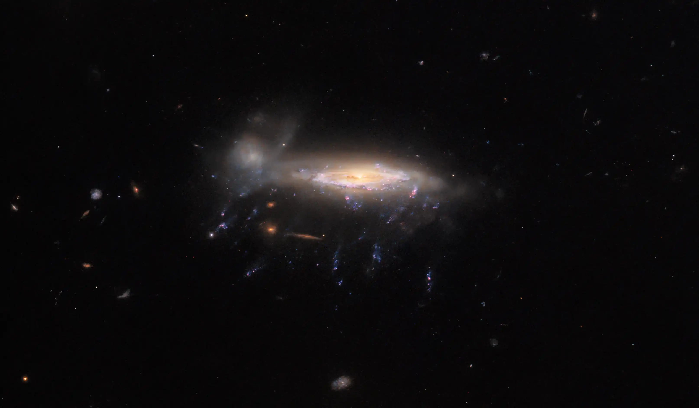
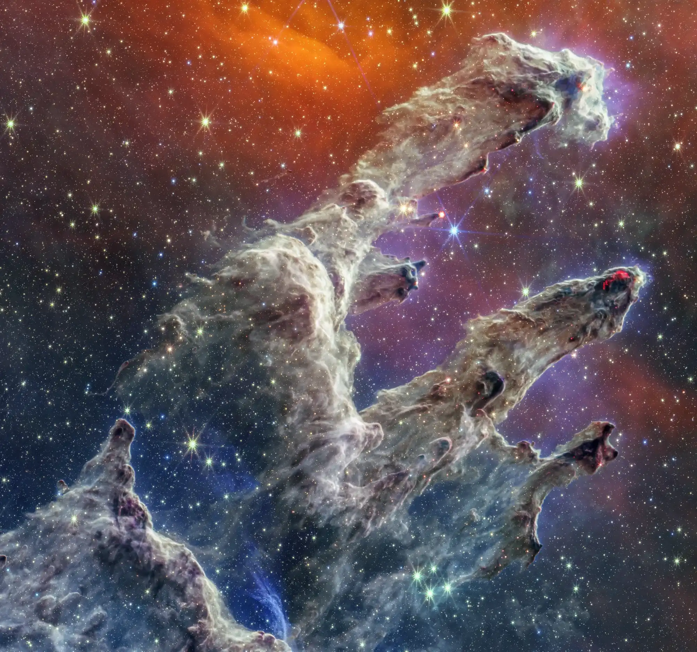
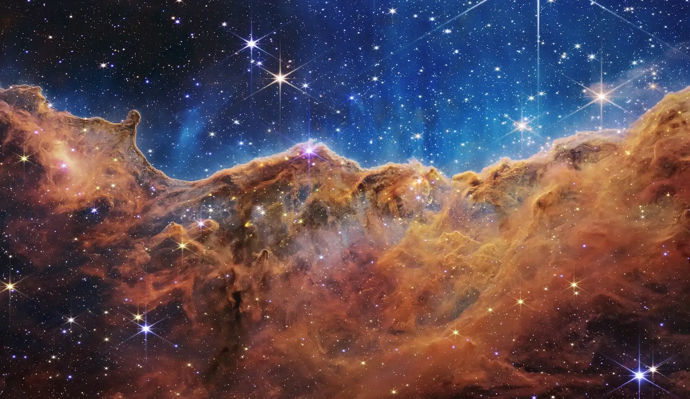
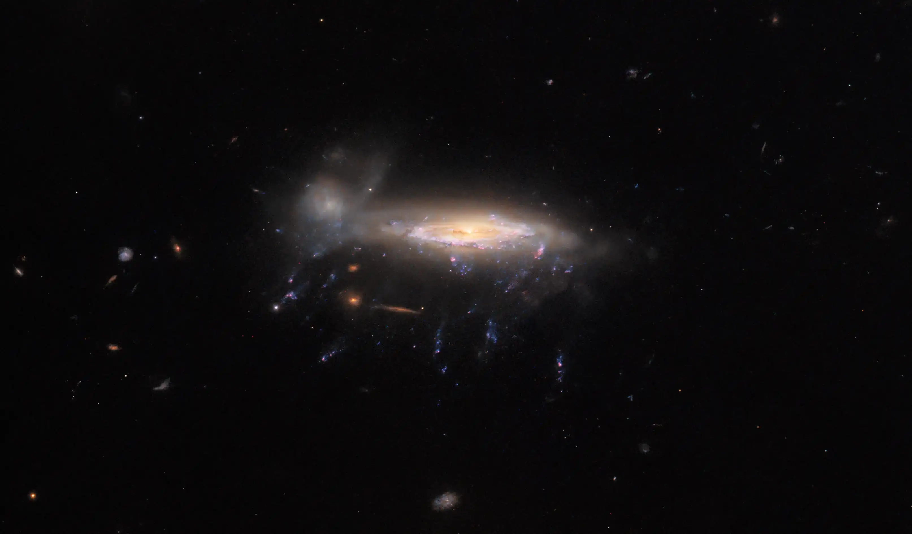
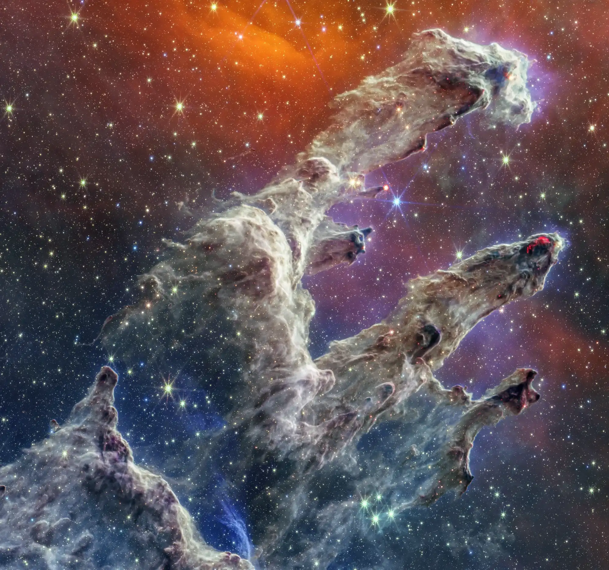
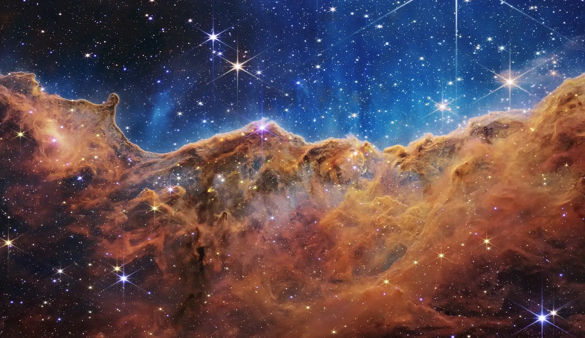

Présentation
Bienvenue sur notre site dédié à l'espace !
ici, vous pourrez découvrir de superbes images de notre système solaire et de l'univers
lointain, ainsi que de nombreuses informations sur les planètes, les étoiles et les
galaxies.
Explorez les merveilles de l'espace et approfondissez vos connaissances sur l'astronomie.
Nous sommes fiers de vous offrir une expérience immersive qui ravira tous les passionnés
d'astronomie, des débutants aux experts.
Rejoignez-nous dans notre exploration de l'espace infini ... et au-delà!
 




